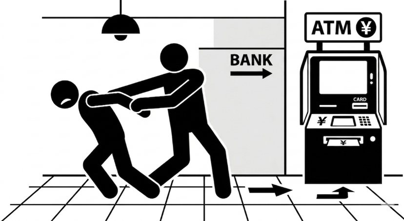
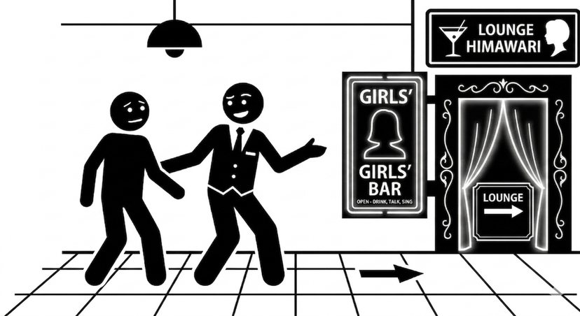
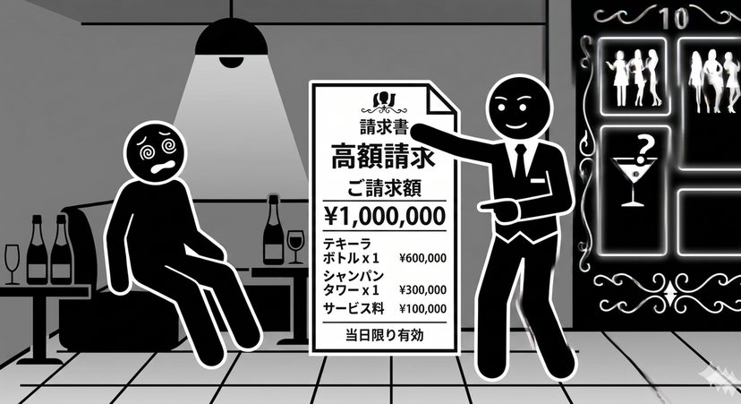
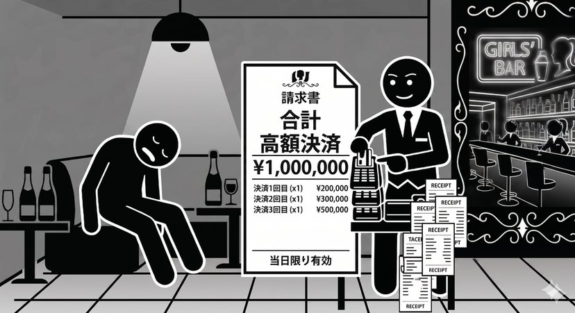
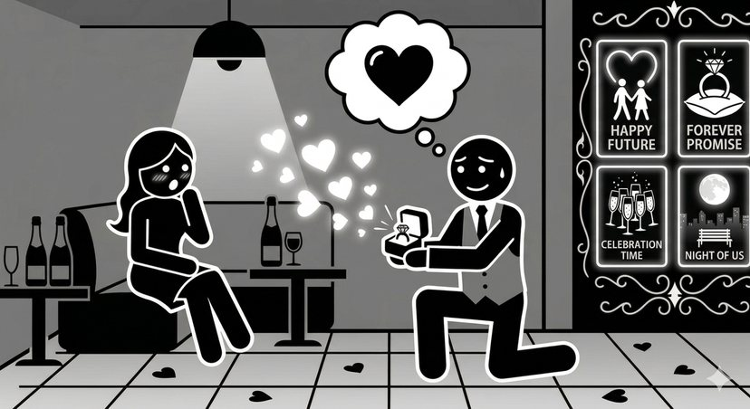

常設弁護士による 仙台悪質ぼったくり相談窓口
ぼったくり・悪質請求に
あっていませんか？
国分町など
ガールズバー・キャバクラ・ホストクラブ・飲食店など
「納得のできない高額請求」についてご相談ください。
- 相談無料
- 弁護士が対応
- LINEで相談できます
LINE相談窓口
スマートフォンで読み取って
友だち追加してください
こんな被害にあっていませんか？
国分町などの繁華街のお店で、次のような被害にあった方からのご相談を受け付けています。
- ガールズバー
- キャバクラ
- ホストクラブ
- 飲食店
- など
-

CASE 01強引にＡＴＭに連れて行かれ、現金を引き出された。
-

CASE 02客引きに案内された店で、身に覚えのない高額な代金を請求された。
-

CASE 03飲酒後、意識が曖昧な状態で高額な代金を支払わされた。
-

CASE 04泥酔しており記憶がないのに、クレジットカードで高額な代金を決済された。
-

CASE 05恋愛感情につけ込まれ、「付き合う」「結婚する」などと言われて高額な注文をさせられた。
ひとつでも当てはまる方、似たような被害にあった方は、
ひとりで悩まず弁護士にご相談ください。
弁護団について
仙台客引き・ぼったくり被害対策弁護団は、仙台の飲食店などで起きている客引き・ぼったくり被害の回復に取り組む弁護士の団体です。
国分町をはじめとする繁華街では、客引きに誘われて入った店で身に覚えのない高額な代金を請求されたり、酔って判断ができない状態で高額な支払いをさせられたりする被害が起きています。
被害にあった方の中には、「自分にも落ち度があったのでは」「恥ずかしくて誰にも言えない」と、ひとりで抱え込んでしまう方も少なくありません。私たちは、そうした方々が泣き寝入りすることのないよう、弁護士による常設の相談窓口を設けています。
-
弁護士が対応
弁護団の弁護士が、法的な観点から被害回復の方法を検討します。
-
相談無料
ご相談は無料です。費用を気にせず、まずはお気軽にご連絡ください。
-
LINEで相談
友だち追加して、メッセージでご相談内容をお送りいただけます。
-
常設の窓口
期間限定ではなく、常設の相談窓口として受け付けています。
ご相談の流れ
-
LINEで友だち追加
「LINEで無料相談する」ボタン、またはQRコードから、LINE相談窓口を友だち追加してください。
-
被害の内容を送信
いつ・どこのお店で・いくら請求されたか（支払ったか）など、分かる範囲でメッセージをお送りください。
-
弁護士からご連絡
内容を確認のうえ、弁護士からご連絡します。必要に応じて、詳しくお話を伺います。
-
解決に向けて対応
今後の見通しや対応方法をご説明します。ご依頼いただく場合は、費用についても事前にご説明します。
ご相談の前に、手元に残しておきたいもの
次のようなものがあると、被害の状況を正確に把握しやすくなります。捨てずに保管しておいてください。
- 請求書・領収書・レシート
- クレジットカードの利用明細・利用通知メール
- 通帳やＡＴＭの取引明細
- お店の名前・場所、入店・退店した時間のメモ
- 客引きや店員とのLINE・SNS・通話の履歴
- 料金表・看板・店内などの写真
資料がそろっていなくても大丈夫です。時間が経つほど証拠の確保や返金の交渉が難しくなることがありますので、まずはお早めにご相談ください。
いまお店で不当な請求をされている、帰してもらえないなど、身の危険を感じるときは、ためらわずに110番通報してください。
よくあるご質問
Q相談は本当に無料ですか？
はい、ご相談は無料です。弁護士に正式にご依頼いただく場合の費用は、ご依頼の前にご説明します。
Qお酒に酔っていて、よく覚えていません。それでも相談できますか？
ご相談いただけます。記憶があいまいな場合でも、クレジットカードの利用明細や領収書などから事実関係を確認できることがあります。
Qすでに支払ってしまいました。取り戻すことはできますか？
事案によっては、返金を求められる可能性があります。現金・クレジットカードなど支払いの方法や状況によって取るべき対応が異なりますので、お早めにご相談ください。
Q家族や勤務先に知られずに相談できますか？
弁護士には法律上の守秘義務があります。ご相談の内容を、ご本人の同意なくご家族や勤務先などに伝えることはありません。
Q「付き合う」「結婚する」と言われて注文した場合も対象ですか？
はい。恋愛感情につけ込まれて高額な注文をさせられた場合も、ご相談ください。
Q国分町以外のお店での被害でも相談できますか？
国分町に限らず、仙台のお店での客引き・ぼったくり被害についてご相談を受け付けています。
ここから友だち追加